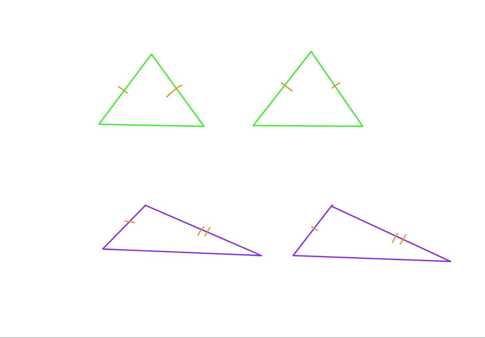
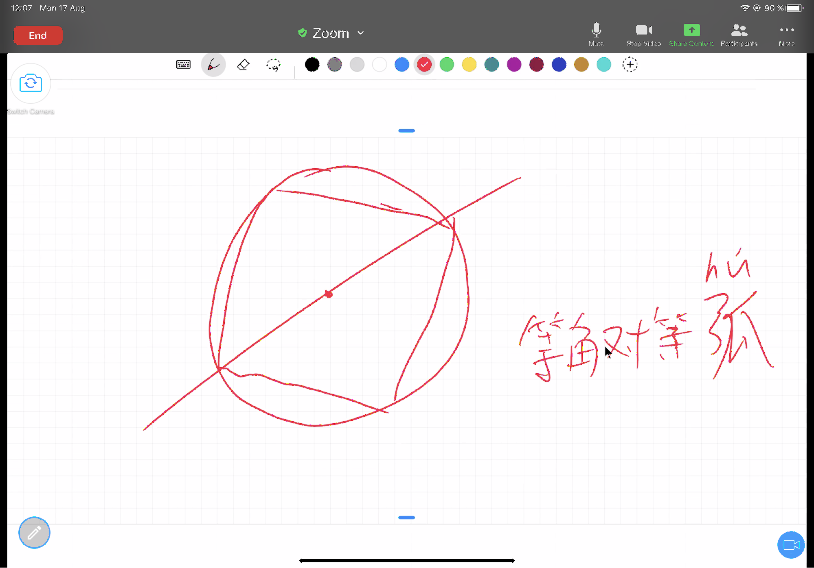

Chapter 8 第七课（命题八到十一）
随着Alex对欧几里得证明的熟悉，也因为证明形式的重复性，在内容的学习上，我们会略微加快一点速度。这节课我们讨论命题八到十，以及快速浏览命题十一。
8.1 命题八
如果两个三角形分别有两边各自对应相等，并且底边也互等，那么被等边夹的角也互等。
Alex首先尝试自己证明，在第一次尝试中，Alex选用了等腰三角形，这里有一个在题意理解上的误区，读题读的不够仔细。题中的两个三角形两边各自对应相等，这里并不是等腰三角形，而是说有两个三角形的边对应相等，欧几里得试图证明的是一个通用的定理。
(绿色，等腰三角形的特殊情况；紫色，一般通用情况，可以是锐角/钝角/直角/等腰/等边三角形等等)

由于命题七是命题八的一部分，并在推理中发挥了关键作用。
正如昨天预料到了，今天一起看完命题八，Alex说这才懂了命题七的存在。
8.2 命题九
将给定的直线角平分。
命题九是画角平分线，之前的课上粗略的看过，今天要求Alex再仔细地证明一边，我们会发现这道题的逻辑框架是这样的：等腰三角形，等边三角形，全等三角形=>角平分线，此命题的实现需要三层铺垫。等腰三角形的两腰相等，等边三角形的两条边，最后连线的公共边，最后一同构造了全等三角形的边边边相等的条件。
这道既短又简单的命题，其实还向我们展现了做辅助线技巧。辅助线是数学几何题解题的钥匙，画对了辅助线，几何证明也就很顺畅。有时候觉得辅助线是需要多尝试才能找到正确的一条，但是如果能够明确辅助线的目的，也是可以用逆序思维推理找到正确的辅助线的。比如命题九这个例子，题目的最终目的是将一个任意角平分。自然而然会让人联想到两个被平分的角各自是某两个三角形的一部分，通过全等可以推断对应两夹角相等。那么为了构造全等三角形，除了平分线这条共同的边，还需要等边和等腰三角形来搭建对应边相等的已知条件。如此，辅助线是关于等边等腰三角形的，而我们需要用辅助线将它们画出来。在数学几何练习题中，对辅助线一筹莫展的时候，不妨从结论倒着推，看需要什么额外的图像，那些额外的定理和性质来辅助证明，如此辅助线也就被找到了。
这道题讨论关于平分的概念，我们可以回到定义十七看一看那里发生了什么。
定义十七：任意一条穿过圆心，并两边都在圆周上终结的直线被称为圆的直径，并且直径将圆一分为二。
定义十七说直径将圆一分为二，这个地方是不是平分？为什么欧几里得没有证明？对，他直接就这样说了，圆一分为二，这就平分的。我让Alex想一下为什么圆的平分就不需要证明。Alex说直径画了两个直线角，都是180度，所以两部分一样。那怎么证明那两个圆弧是一样的？这里默认了等角对等弧。那为什么等腰三角形里，等角对等边需要证明呢？
Alex的“割圆术”
 ## 命题十 将给定的线段平分。
命题十我们简单的过了一遍，这道题是命题九的延续，一样通过全等三角形倒推线段的平分，并没有难度。另外这也是俗称的等腰三角形三线合一性质的一部分，在这里是角平分线和底边的长度平分线重合了。
8.3 命题十一
在给定直线的给定点上，画一直线与给定直线呈直角。
其实做题上课也能看出孩子的性格，像是Alex，反而越难越有挑战性的题目更能调动他的积极性。简单的题目比较喜欢一带而过。像这道题，也是受数学课的影响，Alex会直接画垂线，然而我们其实还没有证出怎么画垂线。这道证明题本身也是以上两道题关于“三线合一”性质的延续，这里是承接上一道题平分线段的连线，再证明在等边三角形中，同时也是能画的直角的线。因此，这里的顺序是：角平分线=>中线=>垂线。
数学的几何题，确实思路很重要，有了思路，基本上一道题也就解完了，但是表达也一样重要，因为哪怕是百分百完成的事情，最后的表达如果只呈现了百分之五十，那么在最后的沟通中，也就只有百分之五十。被省略的部分是不被认可的。下节课开始，我应该和Alex在不跳步骤，遵循格式的情况下重新再看一遍这道题，审视这个思路架构和他的表达。